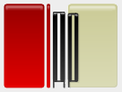

Ruby Editor Plugin website has moved
The jEdit Ruby Editor Plugin website has moved to http://rubyjedit.org/
You should be automatically redirected soon.
|  |
jEdit Ruby Editor Plugin |
| Download |
Ruby Editor Plugin website has movedThe jEdit Ruby Editor Plugin website has moved to http://rubyjedit.org/ You should be automatically redirected soon. |
| Written with jEdit. ©2005 jedit.org/ruby |